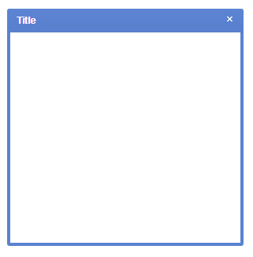
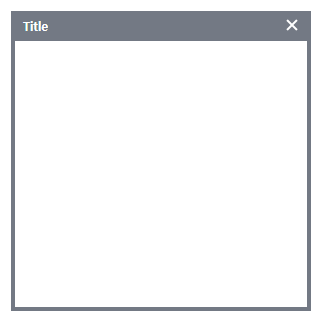
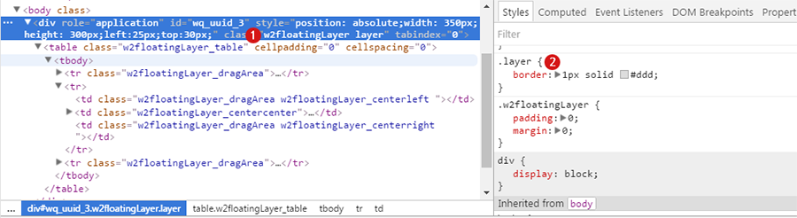

18.FloatingLayer
수정 일자 버전 (SP2)
WebSquare5 Studio : 20180117_1349_x86_B
WebSquare5 Engine : 5.0_2.2982B.20180223.154326_1.5
FloatingLayer는 화면에서 팝업 형태로 띄우는 컴포넌트입니다. 기본적인 html구조는 div안에 table로 만들어진 구조를 가지고 있습니다.
팝업과 다른 점은 UI 컴포넌트이기 때문에 팝업을 띄울 화면에 미리 배치시키고 show/hide API를 이용하여 숨기거나 보여지게 한다는 것입니다.
Group 컴포넌트와 같은 구조로 컴포넌트 하위(안쪽)로 직접 컴포넌트를 배치하거나 WFrame 또는 IFrame 컴포넌트를 배치시켜 화면을 link할 수도 있습니다.
일반적으로 body 하위에 배치하며 본 컴포넌트의 최상위는 div Tag로 이루어져있으며 하위로 복합 Tag들로 구성되어있습니다.
18.1Property
Property | Description |
|---|---|
bodyBottomClass | 중앙 아래의 테두리에 적용할 class명. 기본적으로 background 속성에 image의 url이 적용되어있으므로 image를 제거하고자 할 때는 background-image:none;을 적용해야합니다. |
bodyCenterClass | 내부 컨텐츠가 배치되는 중앙에 적용할 class명. |
bodyLeftBottomClass | 왼쪽 아래의 테두리에 적용할 class명. 기본적으로 background 속성에 image의 url이 적용되어있으므로 image를 제거하고자 할 때는 background-image:none;을 적용해야합니다. |
bodyLeftClass | 왼쪽 테두리에 적용할 class명. 기본적으로 background 속성에 image의 url이 적용되어있으므로 image를 제거하고자 할 때는 background-image:none;을 적용해야합니다. |
bodyRightBottomClass | 오른쪽 아래의 테두리에 적용할 class명. 기본적으로 background 속성에 image의 url이 적용되어있으므로 image를 제거하고자 할 때는 background-image:none;을 적용해야합니다. |
bodyRightClass | 오른쪽 테두리에 적용할 class명. 기본적으로 background 속성에 image의 url이 적용되어있으므로 image를 제거하고자 할 때는 background-image:none;을 적용해야합니다. |
| HTML의 class속성과 동일한 기능을 제공하며 css파일 또는 style블럭에 정의한 class를 1개 또는 공백(space)를 이용하여 다중 적용이 가능합니다.<br/> 컴포넌트의 layout이 복잡한 구조를 가지고 있기 때문에 css의 selector를 이용하여 하위 항목에 접근해야합니다.<br/> 기본적으로 엔진 내부에서 컴포넌트별로 class를 적용하고 있으며 해당 class를 이용하여 컴포넌트의 css를 공통으로 적용할 수 있습니다. |
closeButtonClass | 상단 title영역의 우측 닫기 버튼에 적용할 class. 닫기 버튼은 image로 되어있으며 background 속성에 image의 url이 적용되어있습니다. 일반적으로 해당 image의 url만 변경하여 사용하며 버튼 image의 사이즈는 width:11px, height:10px 입니다. |
dragResizable SP2 | [default:false] 마우스 드래그를 이용한 리사이즈 사용 여부 |
documentTitle | [default: true, false] 사용자가 FloatingLayer의 제목을 클릭할 때 브라우저 제목(document title)을 계속 유지. true (기본값): 브라우저 제목을 계속 유지. false: 브라우저 제목을 FloatingLayer의 title 속성 값으로 변경. |
fixed SP2 | [default:false] floatingLayer를 움직이지 않도록 설정하는 속성 |
headerCenterClass | 상단 header의 중앙 영역에 적용할 class명. 기본적으로 background 속성에 image의 url이 적용되어있으므로 image를 제거하고자 할 때는 background-image:none;을 적용해야합니다. |
headerLeftClass | 상단 header의 왼쪽 영역에 적용할 class명. 기본적으로 background 속성에 image의 url이 적용되어있으므로 image를 제거하고자 할 때는 background-image:none;을 적용해야합니다. |
headerRightClass | 상단 header의 오른쪽 영역에 적용할 class명. 기본적으로 background 속성에 image의 url이 적용되어있으므로 image를 제거하고자 할 때는 background-image:none;을 적용해야합니다. /** |
id | 컴포넌트 ID로 전역객체로 할당되며 script에서 본 id로 컴포넌트에 접근이 가능합니다 |
movable | [default:true, true] 컴포넌트가 drag&drop 이동 유무 |
style | FloatingLayer의 style 속성 |
tabIndex SP2 | Tab Key를 이용 한 컴포넌트의 포커스 순서로 HTML의 tabindex속성과 동일한 기능을 제공한다. |
title | 상단 header에 표현되는 Text값으로 해당 영역에 HTML title속성에도 동일한 값이 설정됩니다. |
titleClass | 상단 header에 표현되는 Text(title)에 적용할 class명. |
useModal | [default:false, true]컴포넌트의 show될 때 modal(본 컴포넌트 이외의 컴포넌트 제어를 막습니다)을 적용할 지의 여부 |
useModalStack SP2 | [default:false, true]modal 적용 시 modal을 단계적으로 적용할지에 대한 여부 |
18.2브라우저 캡쳐화면

[그림 18-1]floatingLayer default 스타일
18.3class 적용과 스타일 변경

[그림 18-2]Class를 xin이라고 지정했을 경우
.xin .w2floatingLayer_topcenter{background-image:url(/common/images/fl_top_middle_bg.gif);} .xin .w2floatingLayer_topright{background-image:url(/common/images/fl_top_right.gif);} .xin .w2floatingLayer_topleft{background-image:url(/common/images/fl_top_left.gif);} .xin .w2floatingLayer_centerright{background-image:url(/common/images/fl_middle_right_bg.gif);} .xin .w2floatingLayer_centerleft{background-image:url(/common/images/fl_middle_left_bg.gif);} .xin .w2floatingLayer_bottomleft{background-image:url(/common/images/fl_bottom_left.gif);} .xin .w2floatingLayer_bottomright{background-image:url(/common/images/fl_bottom_right.gif);} .xin .w2floatingLayer_bottomcenter{background-image:url(/common/images/fl_bottom_middle_bg.gif);}
18.4CSS Overriding
FloatingLayer 컴포넌트를 designView에 그리고 property 의 Class 에 사용자 정의 class를 정의한 다음 Preview 합니다.

No | Class | Description |
|---|---|---|
1 | w2floatingLayer,layer | w2floatingLayer는 웹스퀘어 엔진에서 정의된 클래스입니다, 기본적으로 html 로 떨구는 시점에서 자동으로 부여됩니다. layer 는 사용자 정의 클래스 입니다. 해당 클래스를 이용하여 디자인을 바꿀 수 있습니다. |
2 | layer | 사용자 정의 클래스로 Stylesheet_ext.css 다음에 적용됩니다. 동일한 스타일 시트를 정의함으로써 overriding(덮어쓰기) 됩니다. |
18.5주의사항 및 Tip
style에 display:none; 값을 추가하면 처음 로딩될때 보이지 않게 됩니다.
floatingLayer 안에 wframe를 불러올 수 있으며 id값이 중복이 되지 않도록 주의합니다.
floatingLayer가 다른 컴포넌트보다 상위에 놓이도록 하려면 z-index 값을 변경하세요.ex) Iframe팝업일경우 z-index는 6010이 적용됩니다.
floatingLayer는 wframe 이나 iframe보다 해당페이지 안에서 show 나 hide 형식으로 작업을 많이 합니다.